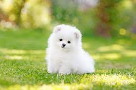

 Feel free to donate!! Make ALL donations here
These two despicable, hideous dogs are examples of what prisoners see in our dogged-out prison. This happens to be the ONLY approved act of human indangerment approved by the United States capital and President, Joe Biden. A copy with further details CAN NOT be found!